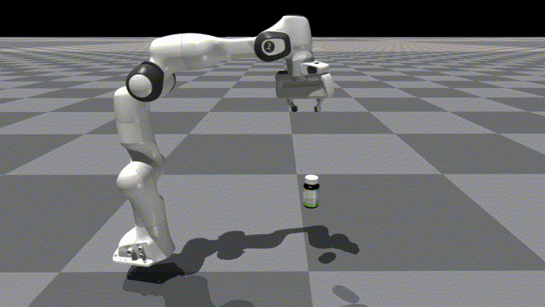
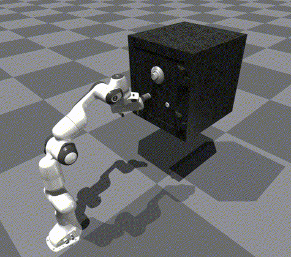
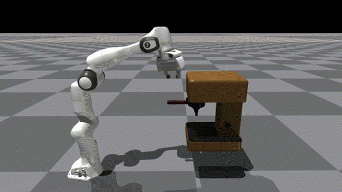
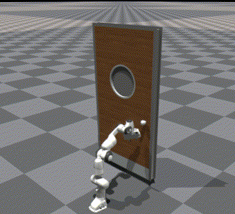

First image description.

Second image description.

Third image description.

Fourth image description.

Articulated object manipulation is a critical capability for robots to perform various tasks in real-world scenarios. Composed of multiple parts connected by joints, articulated objects are endowed with diverse functional mechanisms through complex relative motions. For example, a safe consists of a door, a handle, and a lock, where the door can only be opened when the latch is unlocked. The internal structure, such as the state of a lock or joint angle constraints, cannot be directly observed from visual observation. Consequently, successful manipulation of these objects requires adaptive adjustment based on trial and error rather than a one-time visual inference. However, previous datasets and simulation environments for articulated objects have primarily focused on simple manipulation mechanisms where the complete manipulation process can be inferred from the object’s appearance. To enhance the diversity and complexity of adaptive manipulation mechanisms, we build a novel articulated object manipulation environment and equip it with 9 categories of objects. Based on the environment and objects, we further propose an adaptive demonstration collection and 3D visual diffusion-based imitation learning pipeline that learns the adaptive manipulation policy. The effectiveness of our designs and proposed method is validated through both simulation and real-world experiments.
@inproceedings{wang2025adamanip,
title={AdaManip: Adaptive Articulated Object Manipulation Environments and Policy Learning},
author={Wang, Yuanfei and Zhang, Xiaojie and Wu, Ruihai and Li, Yu and Shen, Yan and Wu, Mingdong and He, Zhaofeng and Wang, Yizhou and Dong, Hao},
booktitle={International Conference on Learning Representations},
year={2025},
url={https://openreview.net/forum?id=Luss2sa0vc}
}